基礎題
一個基本電荷的電量為 1.6×10−19 庫侖，下列何者的電量相當於一個基本電荷的電量？
- (A) 1 個質子
- (B) 1.6 個電子
- (C) 1019 個質子
- (D) 1.6×1019 個電子
看答案與詳解
答案：(A)
(A) ✔ 1 個質子帶 ＋1.6×10−19 C。
(B) ✘ 電子不能分割，且 1.6 個電子的電量是 1.6e。
(C) ✘ 1019 個質子的電量＝1019×1.6×10−19＝1.6 C。
(D) ✘ 1.6×1019 個電子的電量大小＝2.56 C。
以絕緣線分別懸掛 A、B 兩金屬球。已知 A 球帶有電荷，B 球不帶電；兩球開始相距甚遠，今移動懸線，使 B 球接近 A 球。在此過程中，下列有關兩球間電力作用的敘述，何者正確？
- (A) 在未接觸前，兩球間無靜電力作用；接觸後，互相排斥而分開
- (B) 在未接觸前，兩球互相吸引；接觸後，互相排斥而分開
- (C) 兩球始終互相排斥
- (D) 在未接觸前，兩球互相吸引；接觸後亦不分開
看答案與詳解
答案：(B)
接觸後：A 的部分電荷轉移到 B（接觸起電），兩球帶同性電 → 互相排斥而分開。
故選 (B)。
在自然課本中有一段描述：「流經電阻的電流是 200 mA。」關於 200 mA 的意義，下列何者正確？
- (A) 每秒有 0.2 個電子流過燈泡
- (B) 每秒有 2 億個電子流過燈泡
- (C) 每秒有電量 0.2 庫侖的電子流過燈泡
- (D) 每秒有電量 2 億庫侖的電子流過燈泡
看答案與詳解
答案：(C)
電子數＝0.2÷(1.6×10−19)＝1.25×1018 個，遠多於 2 億（2×108）個。
(A)(B)(D) ✘；(C) ✔。
下列選項中電路元件符號代表的電路元件，何者沒有出現在附圖的電路裝置中？
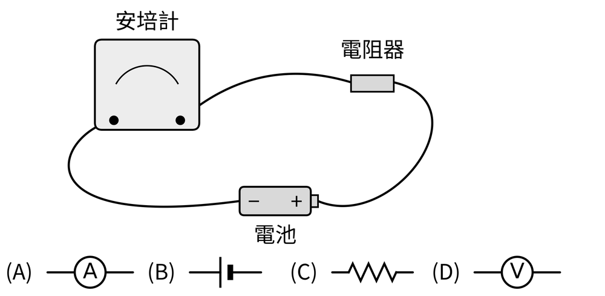
看答案與詳解
答案：(D)
(A) Ⓐ 為安培計，有出現。
(B) 長短線為電池，有出現。
(C) 鋸齒線為電阻器，有出現。
(D) Ⓥ 為伏特計，圖中沒有 → 選 (D)。
若以箭頭方向表示電流方向，則下列選項中哪一個電路裝置表示的電流方向正確？
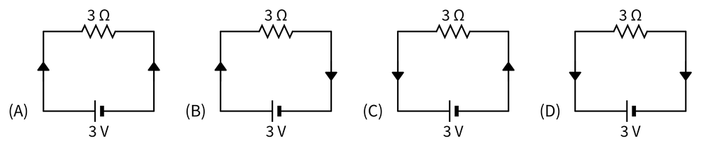
看答案與詳解
答案：(B)
在電池外部，電流由正極流出 → 沿左側導線向上 → 經過 3 Ω 電阻 → 沿右側導線向下流回負極。
左側向上、右側向下，選 (B)。
〔易錯〕電子流方向才是由負極流出，與電流方向相反。
圖(二十二)為某國家一般家中所用電源的電流與時間關係圖，根據此圖判斷，下列敘述何者正確？
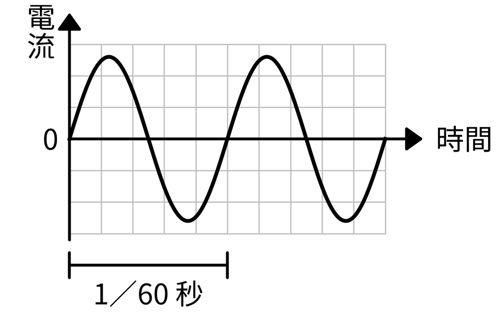
- (A) 此電源為直流電，頻率為 1／60 Hz
- (B) 此電源為直流電，頻率為 60 Hz
- (C) 此電源為交流電，頻率為 1／60 Hz
- (D) 此電源為交流電，頻率為 60 Hz
看答案與詳解
答案：(D)
圖中標示 1／60 秒恰為一個完整波形（一個週期）→ T＝1／60 s。
頻率 f＝1／T＝60 Hz，選 (D)。
〔易錯〕1／60 是週期（秒），不是頻率。
如表為甲、乙兩款市售省電燈泡所使用的電壓與電功率。若兩燈泡正常使用 100 小時，甲、乙燈泡所消耗的電能為 X甲 度、X乙 度，則下列關係式何者正確？
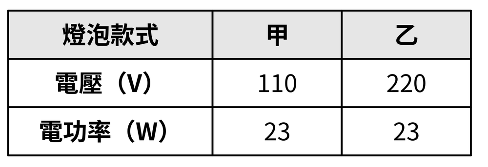
- (A) X甲＝X乙
- (B) X甲＝2X乙
- (C) X甲＝4X乙
- (D) 2X甲＝X乙
看答案與詳解
答案：(A)
電能 E＝Pt：X甲＝0.023 kW×100 h＝2.3 度；X乙＝0.023 kW×100 h＝2.3 度。
兩者功率、時間都相同 → 消耗電能相同，與使用電壓無關，選 (A)。
秀春買了一個電火鍋，圖(十九)為電火鍋上的電器標示，依據標示的資訊，在正常使用的情形下，此電火鍋達到最大功率時，每分鐘消耗多少的電能？
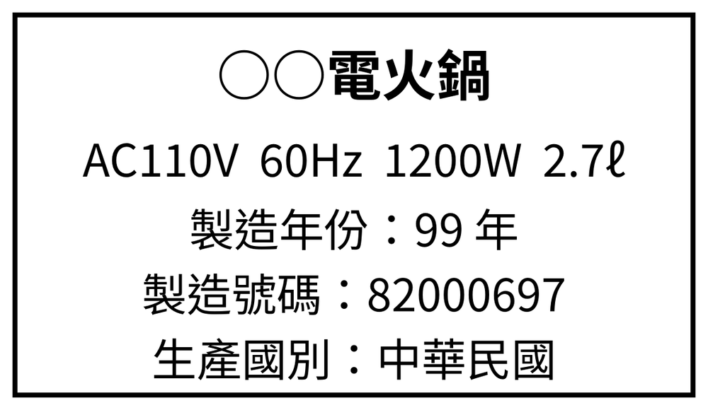
- (A) 20 J
- (B) 110 J
- (C) 1200 J
- (D) 72000 J
看答案與詳解
答案：(D)
E＝Pt＝1200 W×60 s＝72000 J，選 (D)。
〔易錯〕1200 J 是「每秒」消耗的電能。
小美測量某導體兩端的電壓及通過的電流大小，結果如右表所示。已知此導線遵守歐姆定律，則表中的 X 與 Y 的數值分別為何？
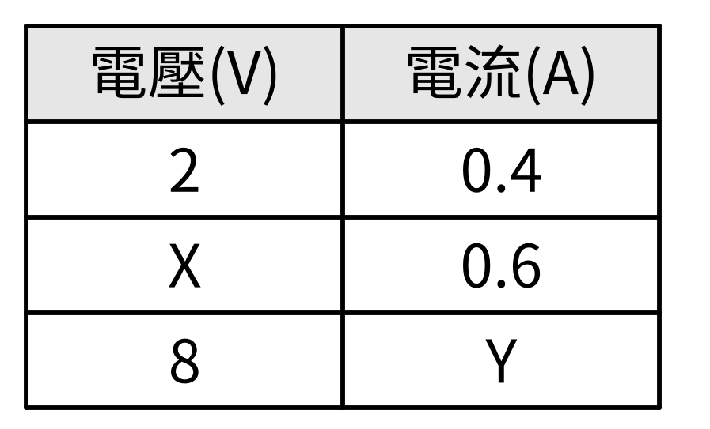
- (A) X＝3，Y＝0.8
- (B) X＝4，Y＝0.8
- (C) X＝3，Y＝1.6
- (D) X＝4，Y＝1.6
看答案與詳解
答案：(C)
X＝IR＝0.6×5＝3（V）；Y＝V／R＝8÷5＝1.6（A）。
故 X＝3、Y＝1.6，選 (C)。
根據右圖，電池提供的總電壓為 20 V，若電阻比 Ra：Rb：Rc：Rd＝1：2：3：4，則下列各電阻兩端的電壓何者正確？
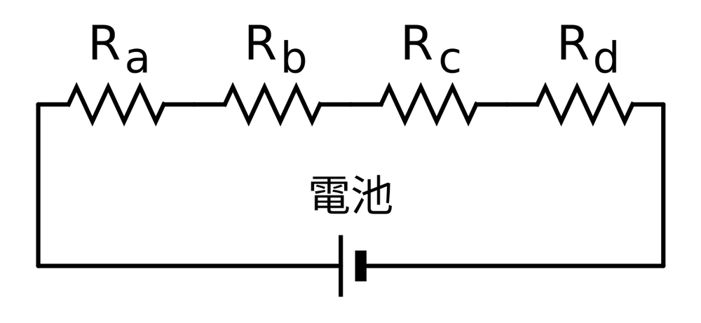
- (A) Va＝8 V
- (B) Vb＝6 V
- (C) Vc＝6 V
- (D) Vd＝2 V
看答案與詳解
答案：(C)
總份數 10，每份 20÷10＝2 V → Va＝2 V、Vb＝4 V、Vc＝6 V、Vd＝8 V。
選 (C)。
冠宇以延長線連接家用 100 V 的電源插座，若同時使用電壓均為 100 V，但耗電功率各為 400 W 的烘碗機、900 W 的電鍋、1200 W 的微波爐，500 W 的電冰箱，且延長線沒有超過電流負載，則此時通過延長線的電流為多少？
- (A) 18 A
- (B) 20 A
- (C) 28 A
- (D) 30 A
看答案與詳解
答案：(D)
總電流 I＝P／V＝3000÷100＝30 A（也可各自算 4＋9＋12＋5＝30 A），選 (D)。
一電路裝置如附圖所示，圖中導線電阻與電池內電阻忽略不計，甲、乙兩個燈泡皆正常發亮。若因燈泡甲燒毀而使電流無法通過燈泡甲，則有關燈泡乙在燈泡甲燒毀後的敘述，下列何者最合理？
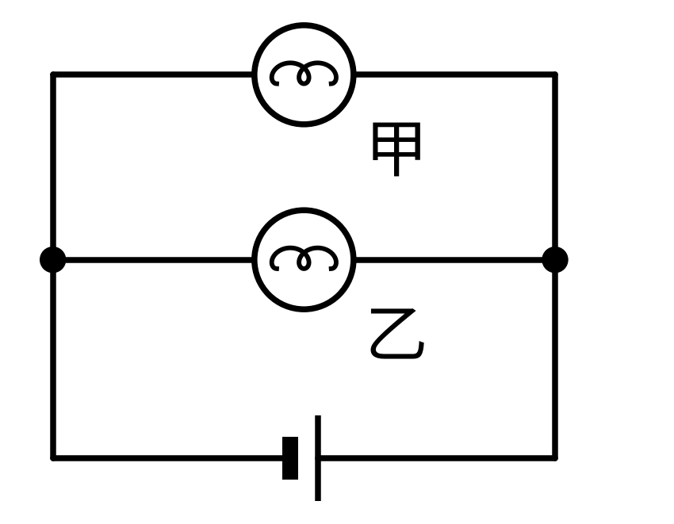
- (A) 因電路發生斷路而使燈泡乙在未燒毀的情況下熄滅
- (B) 因電路發生短路而使燈泡乙在未燒毀的情況下熄滅
- (C) 流經燈泡乙的電流變為原本的 2 倍而使其亮度增加
- (D) 燈泡乙仍正常發亮且流經燈泡乙的電流大小仍不變
看答案與詳解
答案：(D)
甲燒毀只使甲所在的支路斷路，乙的電壓不變 → I乙＝V／R 不變，亮度不變，選 (D)。
(A) ✘ 斷路只發生在甲支路 (B) ✘ 沒有短路 (C) ✘ 電流不變（總電流才變為一半）。
進階題
已知絲絹摩擦玻璃棒會使電子由玻璃棒轉移到絲絹。現在取一根經絲絹摩擦過的帶電玻璃棒接近一不帶電的金屬球，如圖（一），金屬球以絕緣棒架著，再以手指輕觸此金屬球。關於通過手指的電流敘述，何者正確？
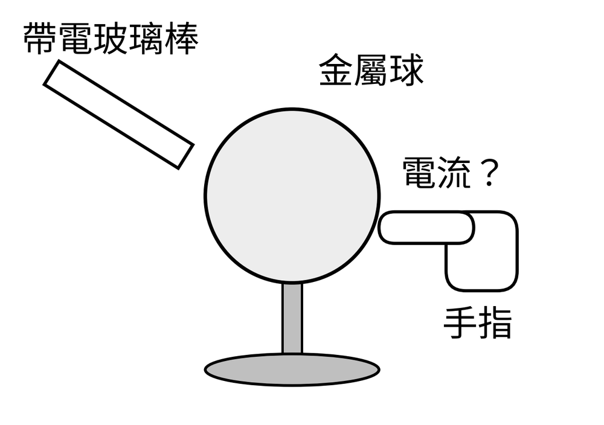
- (A) 電流由手指流向金屬球
- (B) 不會產生電流
- (C) 電流由金屬球流向手指
- (D) 電流在手指與金屬球間來回流動
看答案與詳解
答案：(C)
手指觸球（接地）→ 電子由人體（大地）流入金屬球（感應起電的接地步驟）。
電流方向與電子流相反 → 電流由金屬球流向手指，選 (C)。
曉蕙要利用安培計和伏特計測量一個電阻器的電阻大小，圖（三十）是電路裝置圖，則圖中甲、乙、丙三處所連接的器材應該分別是何者？
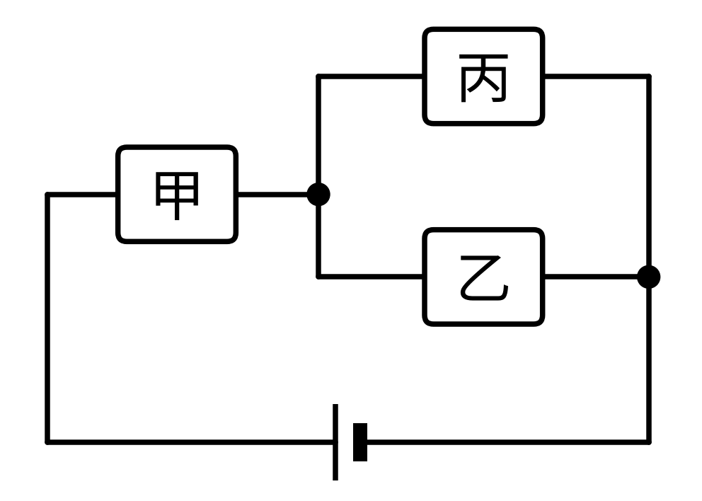
- (A) 甲：伏特計、乙：安培計、丙：電阻器
- (B) 甲：電阻器、乙：安培計、丙：伏特計
- (C) 甲：伏特計、乙：電阻器、丙：安培計
- (D) 甲：安培計、乙：伏特計、丙：電阻器
看答案與詳解
答案：(D)
安培計要與電阻器串聯 → 放在主線（甲）；伏特計要與電阻器並聯 → 乙、丙一個放電阻器、一個放伏特計。
(A)(C) ✘ 伏特計電阻極大，放在主線上電路幾乎沒有電流。
(B) ✘ 安培計與伏特計並聯，安培計電阻極小，等於把電阻器短路。
(D) ✔。
圖為甲、乙、丙三條電阻線通電時電路圖及其電壓 V 與電流 I 之關係。假設這三條電阻線是由相同的實心金屬材料製成，它們長度相同，粗細不同，截面積分別為 A甲、A乙、A丙，且圖中的三條線皆為直線，則大小為何？
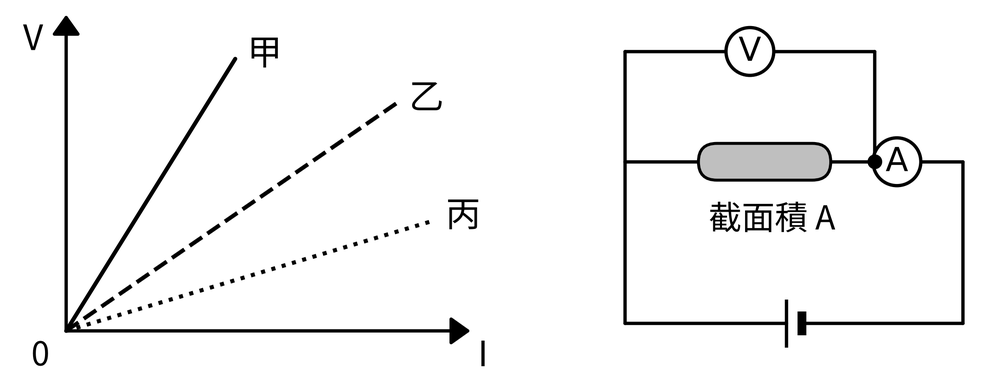
- (A) A甲＞A乙＞A丙
- (B) A丙＞A乙＞A甲
- (C) A甲＝A乙＝A丙
- (D) A乙＞A甲＞A丙
看答案與詳解
答案：(B)
同材質、同長度時，R 與截面積成反比 → A丙＞A乙＞A甲，選 (B)。
有甲、乙、丙、丁四組電路裝置，其電池的電壓值及電阻器的電阻值如圖(二十五)所示。若不計導線電阻及電池內電阻，則哪一組電路裝置中電阻器的耗電功率最高？
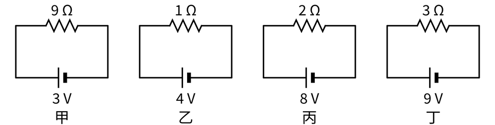
- (A) 甲
- (B) 乙
- (C) 丙
- (D) 丁
看答案與詳解
答案：(C)
甲：32÷9＝1 W；乙：42÷1＝16 W；丙：82÷2＝32 W；丁：92÷3＝27 W。
丙最大，選 (C)。
〔易錯〕不能只看電壓最大（丁）或電阻最小（乙）。
一電路裝置如圖所示，電池的電壓為 6 V，電阻器甲與電阻器乙並聯，此時流經 P 點之電流 I1 為 2 A，流經 Q 點之電流 I2 為 3 A。若不計導線的電阻與電池內電阻，且電阻器皆符合歐姆定律，則甲、乙電阻值的比為下列何者？
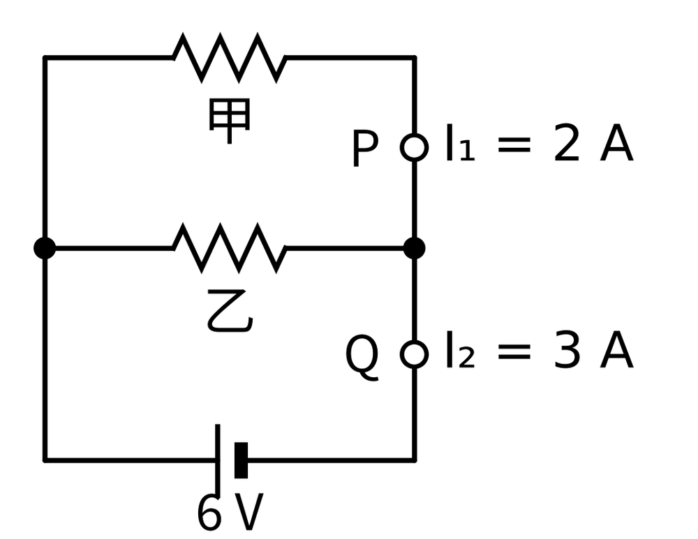
- (A) 1：2
- (B) 2：1
- (C) 2：3
- (D) 3：2
看答案與詳解
答案：(A)
並聯電壓都是 6 V：R甲＝6÷2＝3 Ω，R乙＝6÷1＝6 Ω → R甲：R乙＝1：2，選 (A)。
〔易錯〕3 A 是總電流，不是乙的電流。
甲、乙為兩個相同規格的燈泡，將兩個燈泡以導線與安培計、電源連接成如圖（三十）、圖（三十一）兩種不同的電路，且連接成通路後燈泡皆會發亮，則兩電路中甲燈泡兩端電壓 V1、V2 的比較，與總電流 A1、A2 的比較，下列何者正確？
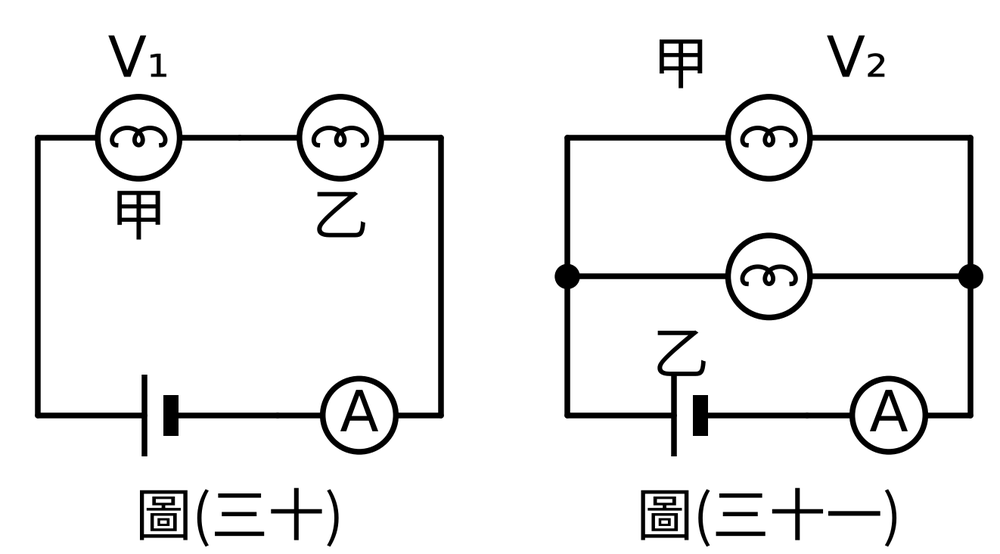
- (A) V1＜V2，A1＜A2
- (B) V1＜V2，A1＞A2
- (C) V1＞V2，A1＜A2
- (D) V1＞V2，A1＞A2
看答案與詳解
答案：(A)
圖（三十）串聯：V1＝V／2，總電阻 2R → A1＝V／2R。
圖（三十一）並聯：V2＝V，總電阻 R／2 → A2＝2V／R。
故 V1＜V2、A1＜A2，選 (A)。
甲、乙、丙為三個完全相同之燈泡，如圖所示，今 a、b 二端分別接線連接至外電源之正負極以導通電流。則下列敘述何者正確？
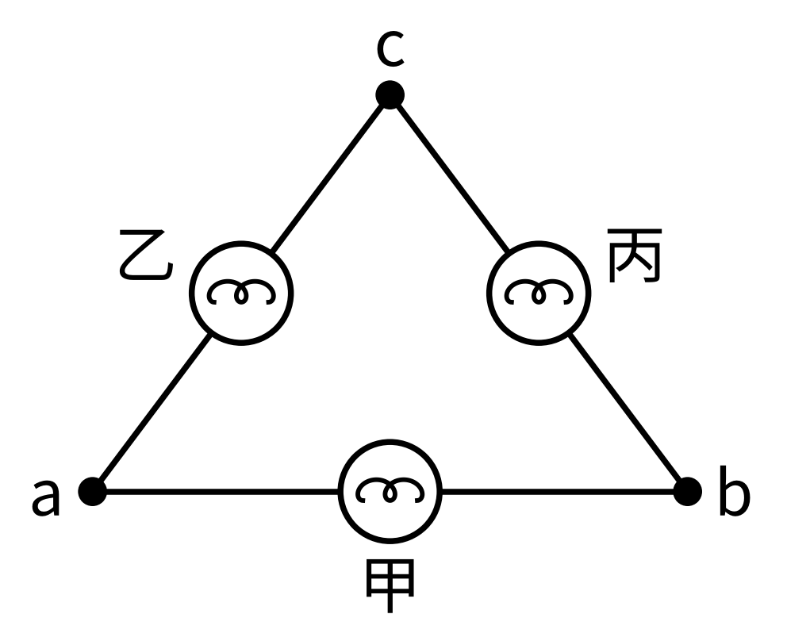
- (A) 三燈泡之亮度皆相等
- (B) 甲燈泡的耗電功率是乙燈泡與丙燈泡的總和
- (C) 通過甲燈泡的電流為乙燈泡或丙燈泡的一半
- (D) 甲燈泡的耗電功率是乙燈泡與丙燈泡的總和之兩倍
看答案與詳解
答案：(D)
設電壓 V、燈泡電阻 R：甲電壓 V，P甲＝V2／R；乙、丙各分到 V／2，各 P＝V2／4R，合計 V2／2R。
(A) ✘ (B) ✘ (C) ✘ I甲＝V／R，乙、丙為 V／2R，甲是它們的 2 倍。
(D) ✔ P甲＝2×(P乙＋P丙)。
如圖（一）所示，將兩個相同的電池串聯後再並聯兩個電阻器，此時兩個電阻器的電功率皆為 100 W。移除電路中一個電池與一個電阻器，重新連接電路，如圖（二）所示。已知兩電阻器皆符合歐姆定律，且每個電池的電壓不變，若忽略導線電阻及電池的內電阻，則圖（二）中電阻器的電功率應為多少？
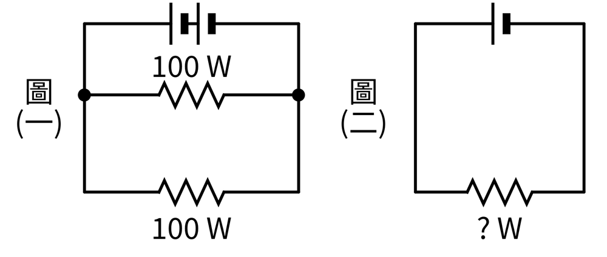
- (A) 25 W
- (B) 50 W
- (C) 100 W
- (D) 200 W
看答案與詳解
答案：(A)
圖（二）：只剩一個電池 V 與一個電阻 R → P＝V2／R＝100÷4＝25 W，選 (A)。
〔易錯〕電壓減半，功率變 1／4，不是 1／2。
有一電路裝置如圖所示，其中燈泡甲、乙的規格相同且可正常發亮，若忽略導線電阻及電池內電阻，下列敘述何者正確？
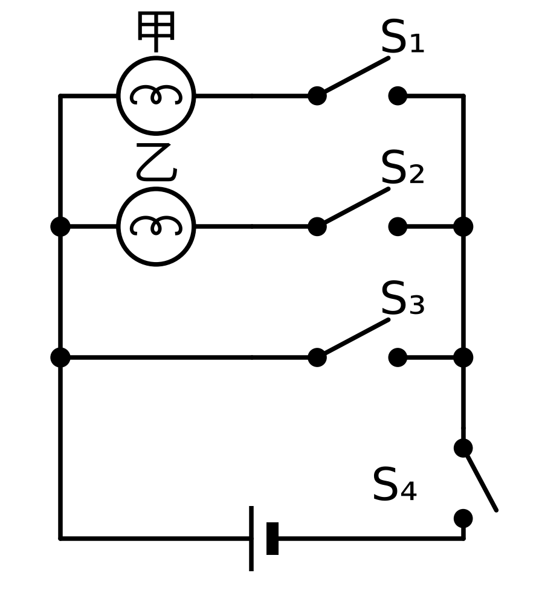
- (A) 接通開關 S1、S2 及 S3 後，兩燈泡均發亮
- (B) 接通開關 S2、S3 及 S4 後，兩燈泡均不亮
- (C) 接通開關 S1、S3 及 S4 後，燈泡甲發亮，燈泡乙不亮
- (D) 接通開關 S1、S2 及 S4 後，燈泡甲不亮，燈泡乙發亮
看答案與詳解
答案：(B)
(A) ✘ S4 未接通，兩燈都不亮。
(B) ✔ S3、S4 接通 → 電流全走 S3 的導線（短路），兩燈都不亮。
(C) ✘ S3 接通造成短路，甲也不亮。
(D) ✘ S1、S2、S4 接通、S3 斷開 → 甲、乙並聯都發亮。
電路裝置如圖(十四)所示，當開關 K 接通後，會發亮的燈泡有哪些？
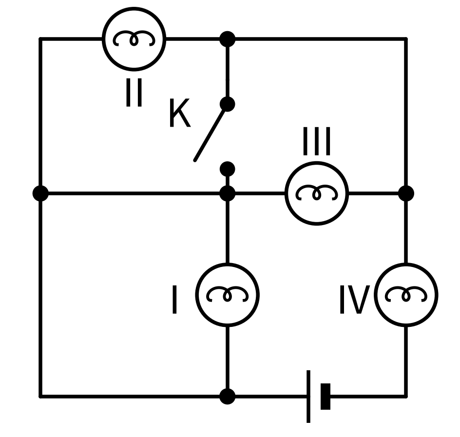
- (A) Ⅳ
- (B) Ⅲ、Ⅳ
- (C) Ⅰ、Ⅲ、Ⅳ
- (D) Ⅰ、Ⅱ、Ⅲ、Ⅳ
看答案與詳解
答案：(A)
上方導線右段與右邊直線上半段相連，記為 Q；燈泡Ⅱ、Ⅲ都接在 P、Q 之間（並聯），燈泡Ⅳ接在 Q 與電池右端之間。
K 接通後 Q 經 K 直接接到 P → 燈泡Ⅱ、Ⅲ兩端也變成同一點而被短路。
只剩燈泡Ⅳ接在電池兩端而發亮，選 (A)。
小舟做電路實驗如圖，電路中 L1、L2、L3 為三個相同的燈泡，當 L1 燈絲突然燒斷後，L2、L3 亮暗變化情形為何？
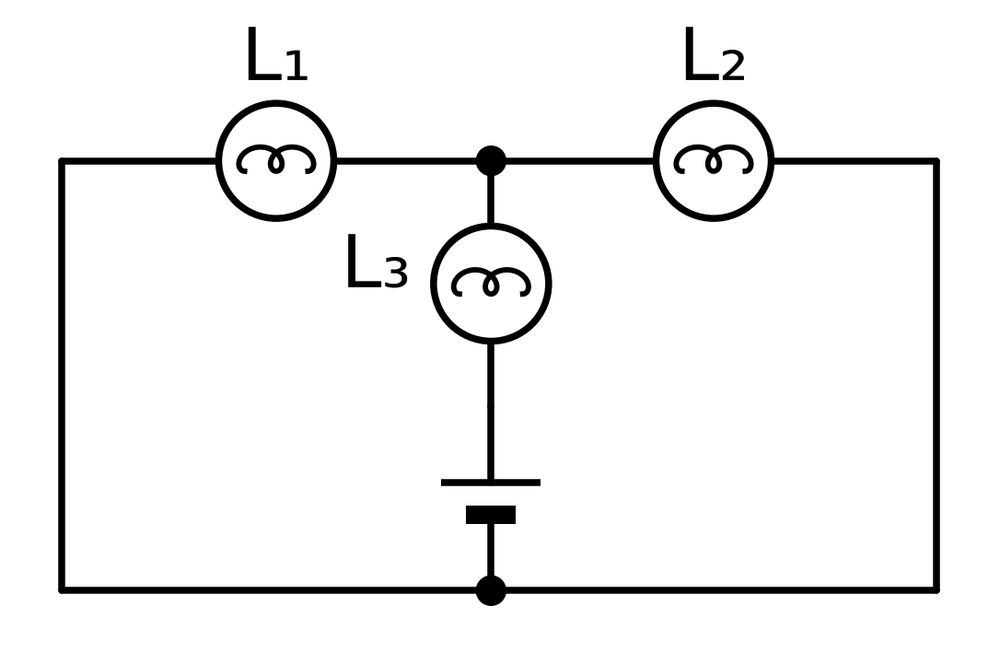
- (A) L2、L3 均變亮
- (B) L2、L3 均變暗
- (C) L2 變暗，L3 變亮
- (D) L2 變亮，L3 變暗
看答案與詳解
答案：(D)
燒斷前：總電阻 R＋R／2＝1.5R，I＝2V／3R；L3 電壓 2V／3，L2 電壓 V／3。
燒斷後：L2、L3 串聯，總電阻 2R，各分到 V／2。
L2：V／3 → V／2，變亮；L3：2V／3 → V／2，變暗，選 (D)。
會考／素養題
玉琳設計一個有關 2B 鉛筆在白紙上所畫直線長度與電阻值關係的實驗，實驗方法為將 2B 鉛筆以相同大小的力，在白紙上畫出粗細相同、長度不同的直線，再以儀器測量直線兩端的電阻值。下列選項中，哪一個實驗紀錄表所反映的實驗設計最符合上述的實驗目的？
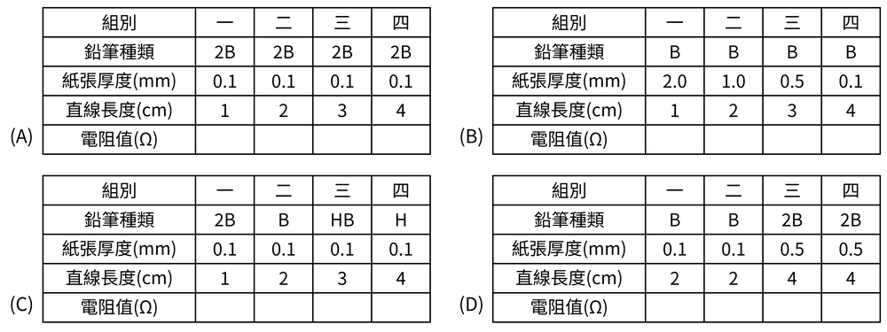
看答案與詳解
答案：(A)
(A) ✔ 都用 2B、紙厚都是 0.1 mm，只改變長度。
(B) ✘ 用 B 鉛筆，且紙張厚度也跟著改變。
(C) ✘ 鉛筆種類改變。
(D) ✘ 鉛筆種類、紙厚與長度同時改變。
一電路裝置如圖(九)所示，此時甲、乙兩個燈泡都不亮，以下為小萍與小雯對此情形可能原因的推論：
小萍：可能是只有乙燈泡燒毀發生斷路，而甲燈泡是因為乙燈泡燒毀而不亮。
小雯：可能是丙、丁兩條導線其中一條發生斷路，造成兩個燈泡都不亮。
關於兩人的推論下列何者正確？
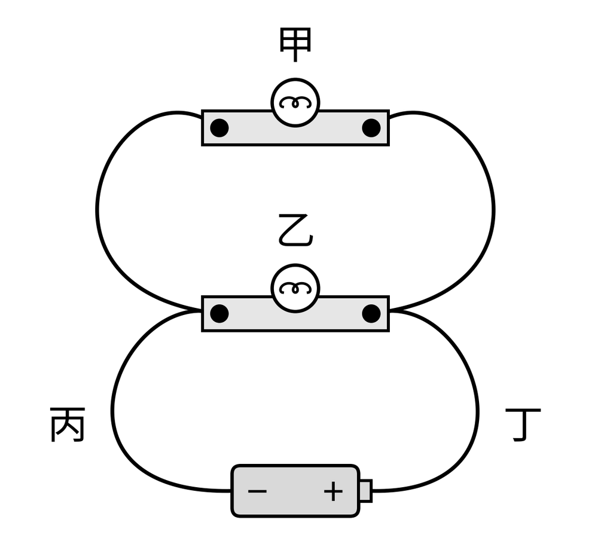
- (A) 兩人的推論均合理
- (B) 兩人的推論均不合理
- (C) 只有小萍的推論合理
- (D) 只有小雯的推論合理
看答案與詳解
答案：(D)
小萍 ✘：乙燒毀只斷開乙自己，甲兩端仍連在電池兩極上，甲應該亮。
小雯 ✔：丙或丁斷開 → 主線斷路，兩燈都不亮。
選 (D)。
圖(二十六)、圖(二十七)兩種連接方式皆為甲、乙兩個燈泡並聯，小明與阿華皆認為圖(二十七)的接法，燈泡甲較不會因為線路故障而不亮，以下為兩人的解釋：
小明：若燈泡乙的燈絲燒斷，在圖(二十六)中會使得燈泡甲不亮，而在圖(二十七)中燈泡甲仍會發亮。
阿華：若導線丙、丁其中一條斷裂，在圖(二十六)中會使得燈泡甲不亮，而在圖(二十七)中燈泡甲仍會發亮。
關於兩人的解釋是否合理？
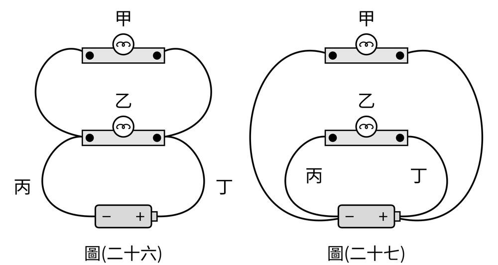
- (A) 兩人皆合理
- (B) 兩人皆不合理
- (C) 只有小明合理
- (D) 只有阿華合理
看答案與詳解
答案：(D)
阿華 ✔：圖（二十六）中甲經由乙燈座的接線柱、再經丙、丁接到電池，丙或丁斷裂 → 甲也斷路；圖（二十七）中甲有自己的導線直接接到電池，丙、丁斷裂只影響乙。
選 (D)。
以導線連接五個燈座與一個電池，形成一個電路，然後將甲、乙、丙、丁、戊五個燈泡裝入燈座，如圖所示。今圖中燈泡甲因燒毀而發生斷路，導致其他燈泡都不亮。已知將燈泡甲跟某一燈泡更換安裝位置後，未燒毀的四個燈泡均可再次發亮，則燈泡甲應與下列哪一燈泡互換位置？
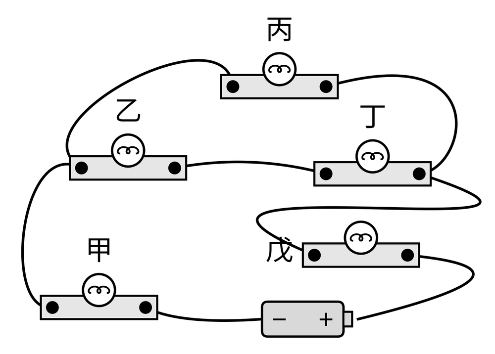
- (A) 乙
- (B) 丙
- (C) 丁
- (D) 戊
看答案與詳解
答案：(B)
燒毀的甲放在主線（甲、戊的位置）→ 整個電路斷路；放在乙或丁的位置 → 乙丁支路斷路，該支路另一燈不亮。
放在丙的位置 → 只有丙支路斷路，其他四燈（主線兩燈＋乙丁支路）都亮 → 甲與丙互換，選 (B)。
老師請阿民和阿仁各設計一個電路，此電路需同時達到下列三個要求：
1、包含三個電阻器和一個電池。
2、流過三個電阻器的電流大小相同。
3、三個電阻器的電功率相同。
阿民和阿仁設計的電路圖如圖（二十三）所示，若忽略導線電阻和電池內電阻，則關於兩人的設計圖是否符合老師的三個要求，下列何者正確？
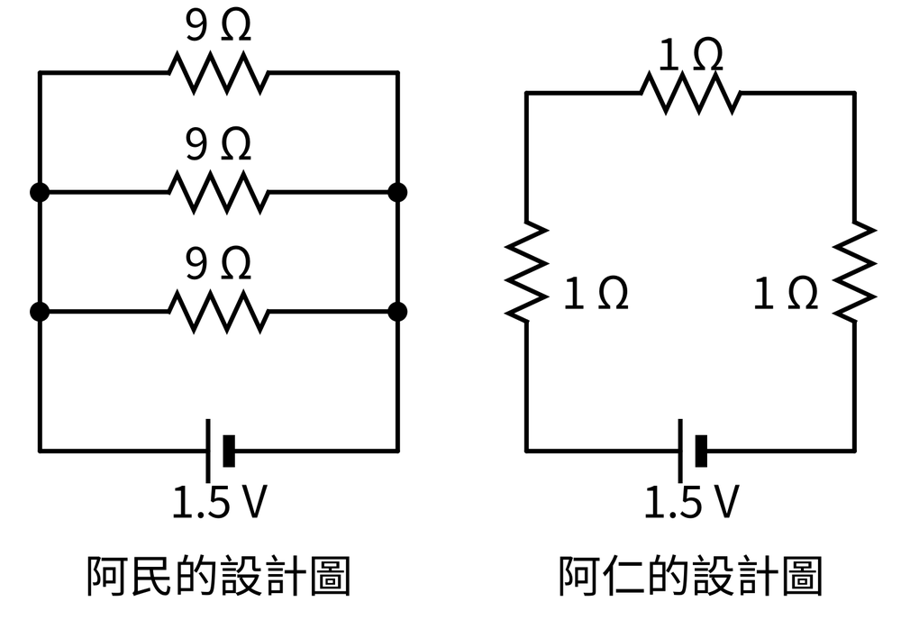
- (A) 只有阿民符合
- (B) 只有阿仁符合
- (C) 阿民和阿仁都符合
- (D) 阿民和阿仁都不符合
看答案與詳解
答案：(C)
阿仁：三個 1 Ω 串聯 → 電流相同；電阻相同 → P＝I2R 相同 → 符合。
兩人都符合，選 (C)。
▲ 第 8-29～8-30 題為題組：老師將「2 個電壓均為 1.5 V 的電池串聯」，利用導線連接電阻值為 100 Ω 的電阻器及開關，如圖（一）所示。另外附有已連接兩條導線且電阻值為 50 Ω 的電阻器，如圖（二）所示。
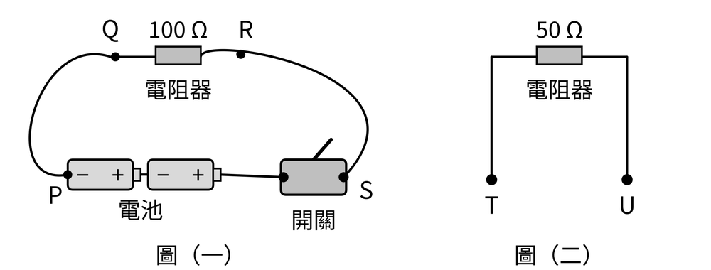
若導線、開關的電阻及電池的內電阻均很小忽略不計，按下開關接通電流後，持續 10 秒，且通電期間電池的電壓保持不變，在這段期間 100 Ω 的電阻器消耗多少電能？
- (A) 0.225 J
- (B) 0.9 J
- (C) 22.5 J
- (D) 90 J
看答案與詳解
答案：(B)
P＝V2／R＝32÷100＝0.09 W；E＝Pt＝0.09×10＝0.9 J，選 (B)。
若要將兩圖中的電路連接為兩個電阻器並聯的電路，採取下列哪個步驟即可完成？
- (A) 將 T 連接 Q，U 連接 R
- (B) 將 T 連接 S，U 連接 R
- (C) 將 T 連接 P，U 連接 Q
- (D) 將 T 連接 R，U 連接 S
看答案與詳解
答案：(A)
(A) ✔ T 接 Q、U 接 R → 兩電阻器並聯。
(B)(D) ✘ R 與 S 之間只有導線，50 Ω 電阻器接在同一段導線兩端，被短路。
(C) ✘ P 與 Q 之間只有導線，同樣被短路。
▲ 第 8-31 題的情境：圖(二十六)為兩個安培計、兩個電阻器、一個電池與數條導線，其中的電阻器為符合歐姆定律的導體，圖(二十七)為一電路圖。老師要求小玉將圖(二十六)中的器材依據圖(二十七)組裝，並將兩個安培計測得的電流值記錄於實驗報告中。
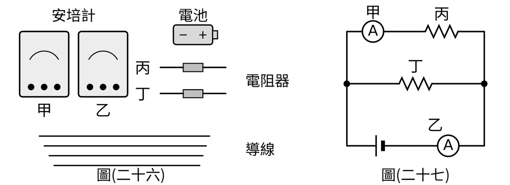
表(十二)為小玉報告中所記錄的電流值，若根據圖(二十七)來判斷表中 I甲＞I乙 是否合理，下列的判斷與論述何者最適當？
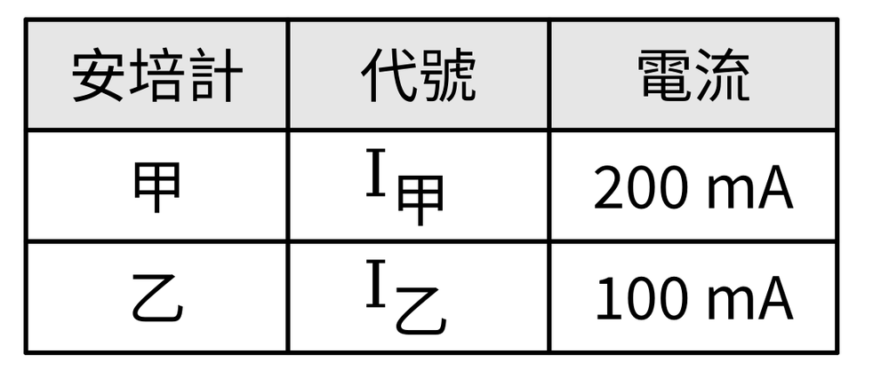
- (A) 合理，因為負極為電子流流出端，而甲較靠近電池負極，所以 I甲＞I乙 合理
- (B) 合理，因為甲測得的電流值應為流過丙與丁的電流值相加，所以 I甲＞I乙 合理
- (C) 不合理，因為正極為電流流出端，而乙較靠近電池正極，所以 I乙＞I甲 才合理
- (D) 不合理，因為乙測得的電流值應為流過丙與丁的電流值相加，所以 I乙＞I甲 才合理
看答案與詳解
答案：(D)
並聯總電流＝支路電流相加：I乙＝I丙＋I丁＞I甲 → 表中 I甲＞I乙 不合理。
(A)(C) ✘ 串聯或同一路徑上的電流處處相同，與靠近哪一極無關。
(B) ✘ 甲只量丙的電流。
(D) ✔。
▲ 第 8-32～8-33 題為題組：小青將包裝口香糖的鋁箔紙剪成如圖（二十二）中所示的形狀，圖中甲、丙兩處截面面積相等，中央乙處截面面積較甲、丙處小。接著她取一個電壓為 9 V 的電池，並使裁剪過的鋁箔紙呈拱形彎曲，讓兩端斜線處分別接觸電池的正極、負極，接觸後鋁箔紙溫度上升，隨即在乙處起火燃燒。
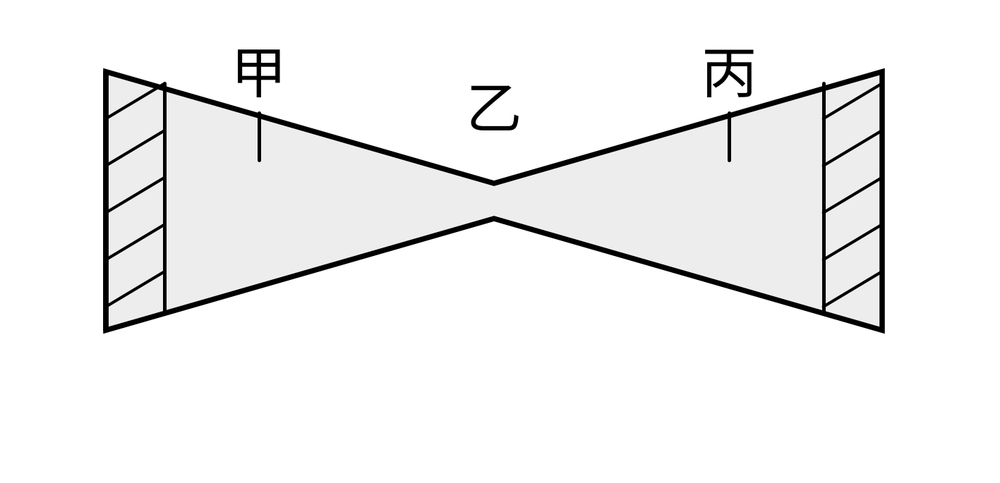
本實驗中鋁箔紙起火燃燒，最適合以下列何種科學現象來解釋？
- (A) 靜電感應
- (B) 電磁感應
- (C) 電流的磁效應
- (D) 電流的熱效應
看答案與詳解
答案：(D)
乙處截面積最小、電阻最大，串聯電流相同時 P＝I2R 最大，所以最先起火。
已知通過鋁箔紙甲、乙、丙三處截面的電流分別為 I甲、I乙、I丙，則 I甲、I乙、I丙 三者的大小關係應為下列何者？
- (A) I甲＝I乙＝I丙
- (B) I甲＞I乙＞I丙
- (C) I甲＜I乙＜I丙
- (D) I乙＞I甲＝I丙
看答案與詳解
答案：(A)
串聯電路中電流處處相同，與截面積大小無關 → I甲＝I乙＝I丙，選 (A)。
〔易錯〕截面積小的地方是電阻大、發熱多，不是電流小。